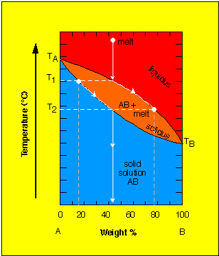
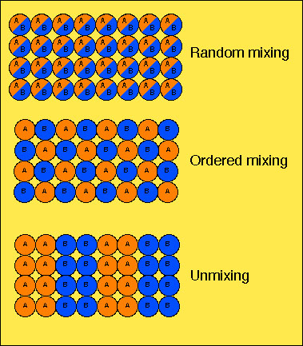

Klein and Hurlbut (21st Ed) p. 236-24, 318-324,
330-332, 448-449, 532-543
The understanding two component systems requires holding one degree
of freedom (variable) constant.
When pressure is held constant (known as isobaric conditions),
then T and X are varied.
Recall that when two components can mix on an atomic scale then they
are considered miscible phases and a solution results.

Points to make:
1. Liquidus Diagram
2. liquidus - upper portion where melt is in equilibrium with crystalline phase.
3. solidus - lower portion where crystalline phase is in equilibrium with melt.
4. Path depicts the evolution of melt and crystalline phase composition.
5. Note: that this is scenario operates assuming constant re-equilibration and a closed system.
6. subsolidus - region below solidus where all solid-state transformations
may take place.
Example from an actual olivine grain:
Core: Mg1.63 Fe0.36
Rim: Mg1.01 Fe0.78
Zonation in the olivine crystal shows us that equilibrium conditions
did not exist. This potentially tells us information about cooling rate.
Coexistance without mixing is known as immisciblity.

At high temperature - 1. structure expands, 2. Vibration of atoms larger,
3. distinct structural sites become similar.
Consequence is that cation of different size can occupy the same site.
e.g., Na+ (1.18Å) and K+ (1.33Å) in
feldspars
Exsolution - As tempertures decrease, diffusion of atoms within
crystal occurs. Inital solid-solutions undergo "unmixing" into
two separate, distinct crystalline phases.
Analogy: Vigourously shaken oil and water mixture will mix for
a short time. With time they will "unmix"
See figure 5.21 (page 238). Subsolidus - phase diagram.
Define:
1. Miscibility gap - region in T-X space where solid-solution compositions are not formed due to exsolution.
2. Phase changes take place in the subsolidus
Examples: hornblende - grunerite, Labradorite An47-An58
Silica* - albite system
* Silica as quartz never crystallizes from solution in water free
systems (crystobilite and tridymite). But, for the purpose of our discussion
(i.e., a binary system) we will ignore the third component water.
16. The effect of changing pressure (increased or decreased) can cause melting or crystallization. The effect is dependent upon all components in the system.
17. In an ideal binary system, usually the effect of increased pressure
will cause crystallization (at the same temperature).
18. The presence of water (a third component) is likely to significantly
alter the behavior of a system.
{kind=link}
{kind=link}
{kind=link}
{kind=link}
{kind=link}
{kind=link}